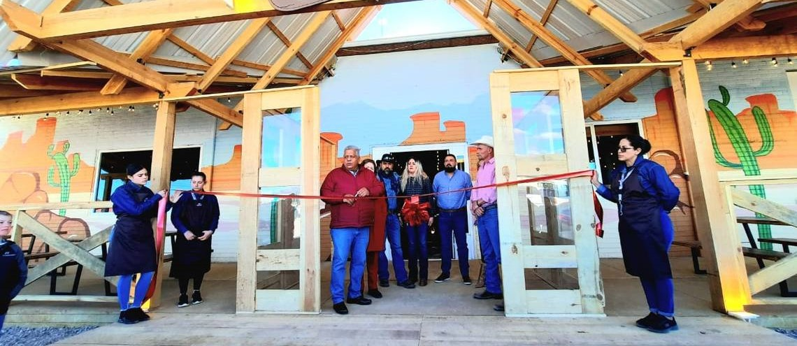

"Nopal de los Panchos de Monterrey " es un relato de pasión, tradición y dedicación que se remonta a varias generaciones atrás. Fundado en los años 70 por la familia Sánchez, originaria de Jalisco, este modesto establecimiento comenzó en mexico como un pequeño puesto de tacos en una esquina de la ciudad. Inspirados por la riqueza culinaria de su tierra natal, los Sánchez se propusieron compartir los auténticos sabores de la comida mexicana
¡Con el paso de los años, la popularidad creció rápidamente, gracias a la calidad de sus platillos y el servicio cálido y familiar que ofrecían. La receta secreta de la salsa de chiles y el cuidado en la selección de los ingredientes se convirtieron en la marca distintiva del restaurante, atrayendo a clientes de todas partes de la ciudad y más allá. A medida que el restaurante ganaba renombre, la familia Sánchez se esforzaba por mantener viva la autenticidad de la comida mexicana, transmitiendo sus conocimientos y técnicas culinarias de generación en generación. Cada plato servido en lleva consigo el legado de décadas de experiencia y amor por la cocina. Hoy en día, el restaurante se ha expandido a varias ubicaciones , pero sigue siendo fiel a sus raíces, manteniendo la misma esencia y calidad que lo convirtieron en un referente gastronómico en la región. El "Nopal de los Panchos de Monterrey" no solo es un lugar para disfrutar de deliciosos platillos mexicanos, sino también un símbolo de la perseverancia y el compromiso de una familia con su pasión por la cocina.!
Nopal de los panchos de Monterrey @2024